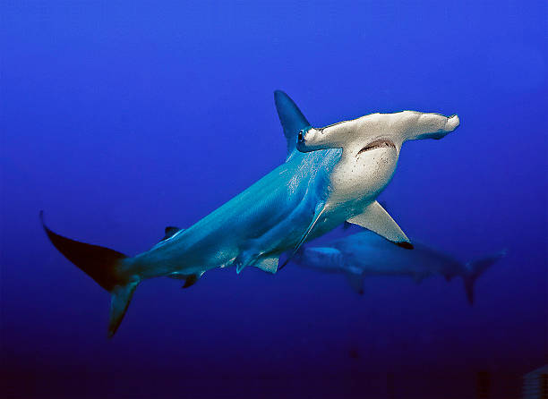
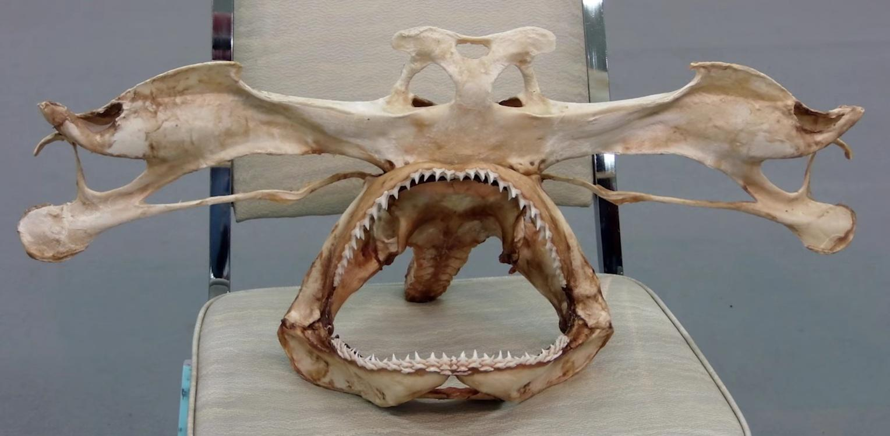
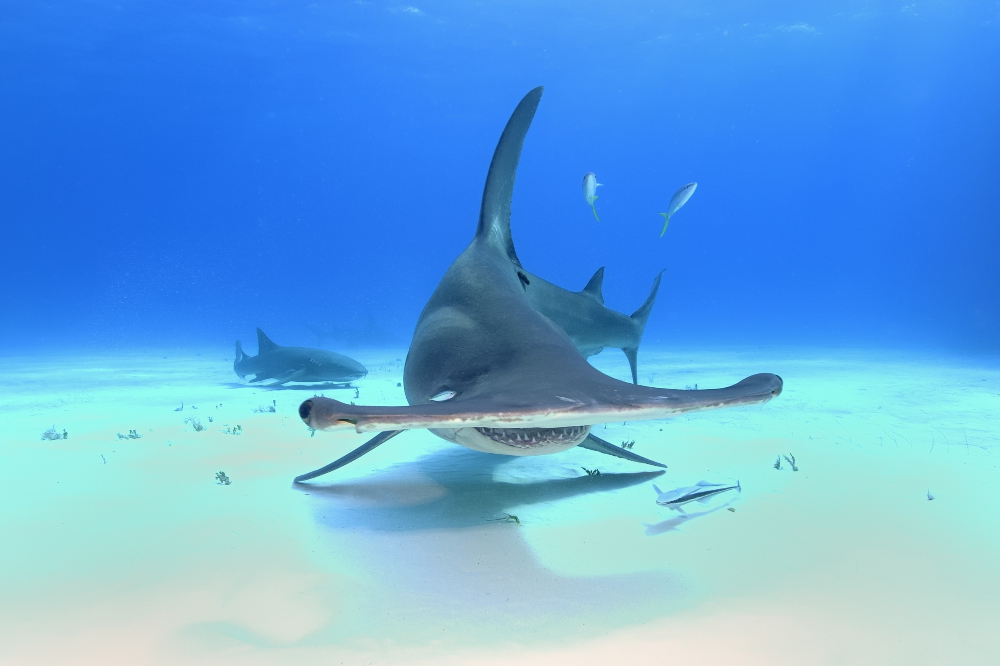

Conheça tudo sobre esse predador fascinante dos oceanos
Introdução
O tubarão martelo é um dos predadores marinhos mais impressionantes e facilmente reconhecíveis devido ao formato único da sua cabeça em "T" ou martelo. Integrante da família Sphyrnidae, ele possui capacidades sensoriais excepcionais e é encontrado em águas tropicais e temperadas ao redor do mundo.

Características Físicas
A característica mais marcante do tubarão martelo é sua cabeça achatada e alargada, chamada de cefalotórax, que se estende lateralmente formando um formato semelhante a um martelo. Essa estrutura propicia uma visão panorâmica quase completa e abriga sensores eletroreceptores altamente desenvolvidos, aprimorando sua capacidade de detectar presas.

Dependendo da espécie, estes tubarões medem entre 1,5 e 4 metros de comprimento e podem pesar até 450 quilos. Sua coloração varia do cinza acinzentado no dorso a tons mais claros no ventre, facilitando a camuflagem com o ambiente marinho.
Habitat
Os tubarões martelo habitam principalmente águas costeiras rasas e recifes, mas também circulam em alto mar. Estão presentes em oceanos Atlântico, Pacífico e Índico, preferindo regiões tropicais e subtropicais, plataformas continentais e estuários.

Comportamento
Ao contrário de muitos tubarões solitários, tubarões martelo frequentemente nadam em agregações sociais chamadas cardumes, especialmente durante o dia. À noite, costumam sair para caçar, utilizando sua cabeça larga para detectar sinais elétricos emitidos por presas ocultas no sedimento marinho.
Esse comportamento social pode contribuir para proteção mútua e aumento da eficiência reprodutiva.
Dieta
O tubarão martelo possui uma dieta diversificada, alimentando-se de peixes, lulas, crustáceos e sobretudo arraias, que sua cabeça larga facilita capturar. Os seus dentes possuem formato afiado e são adaptados para cortar e agarrar firmemente suas presas durante a caça.
Reprodução
Esses tubarões são vivíparos, ou seja, dão à luz filhotes já formados após um período de gestação que pode variar entre 9 a 12 meses. A fêmea pode parir entre 12 e 40 filhotes, que nascem com a cabeça já em formato de martelo, podendo nadar e se alimentar desde muito jovens.
Capacidades Sensoriais
A cabeça em forma de T não é apenas uma característica física, mas também abriga uma quantidade excepcional de sensores eletromagnéticos chamados ampolas de Lorenzini, que detectam campos elétricos produzidos por outras criaturas, facilitando localização de presas escondidas no fundo do mar.
Além disso, esses tubarões possuem um campo visual ampliado com dois olhos amplamente espaçados, e um olfato muito sensível, tornando-os caçadores especializados.
Espécies de Tubarão Martelo
Sphyrna lewini (Tubarão Martelo Comum) - Uma das espécies mais difundidas e estudadas.
Sphyrna mokarran (Tubarão Martelo Gigante) - A maior espécie, podendo ultrapassar 6 metros.
Sphyrna zygaena (Tubarão Martelo Cabelo) - Encontrado em águas frias, com formato corporal mais robusto.
Sphyrna tiburo (Tubarão Martelo Bonito) - Espécie menor, comum em águas costeiras rasas.
Conservação
Infelizmente, o tubarão martelo sofre ameaças devido à pesca excessiva, captura acidental e perda de habitat. Muitas espécies estão listadas como vulneráveis ou ameaçadas pela IUCN, destacando a importância de medidas de proteção, como áreas marinhas protegidas, regulamentos de pesca e conscientização pública.
Curiosidades
O formato da cabeça do tubarão martelo assegura um campo visual de quase 360 graus.
Esses tubarões são especialistas em detectar campos eletromagnéticos gerados por presas enterradas.
Tem um dos sentidos de olfato mais apurados do reino animal.
Realizam migrações longas para reprodução e alimentação, viajando milhares de quilômetros.
Os filhotes nascem totalmente formados e prontos para sobreviver desde o nascimento.